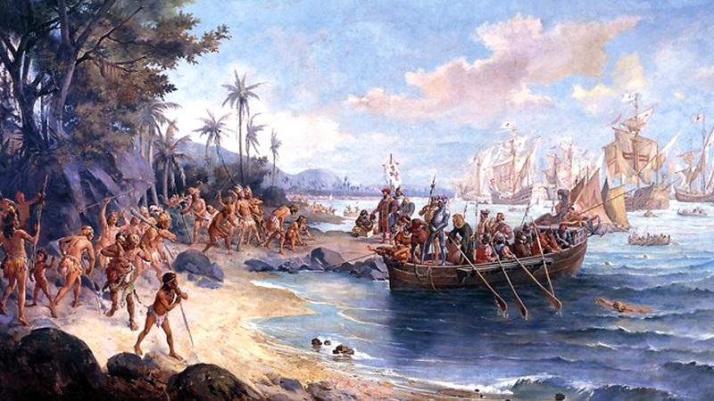

SOBRE A PESSOA PELA COR!

Mesmo no lugar mais duro da Terra, o amor sempre encontra um caminho. Enquanto a cor da pele for mais importante que o brilho dos olhos haverá guerra.
A nossa sociedade necessita de restabelecer uma cultura de amor.
Mesmo no lugar mais duro da Terra, o amor sempre encontra um caminho. Enquanto a cor da pele for mais importante que o brilho dos olhos haverá guerra.
A nossa sociedade necessita de restabelecer uma cultura de amor.

No momento aqui vejo que a mistura da população como nós somos todos mesticos,
pois também temos afriacanos, indianos, branco tal como a escravidão.
Essa forma que nós a construção de uma sociedade principlmente multirracial como uma pessoa pele cor de sua pele.
Antigamente como o "dia do descobrimento do Brasil" o dia que os portugueses - Pedro Álvares Cabral
chegavam aqui, em 22 de abril ano de 1500,território onde hoje se localiza o país.
O tema abordado é uma crítica do conformismo e da atitude da população diante
dos problemas da sociedade.
Ele cantou muito bem essa musica - Gabriel, O Pensador - Racismo É Burrice
Clique e Visite Gabriel, O Pensador - Racismo É Burrice